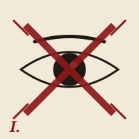
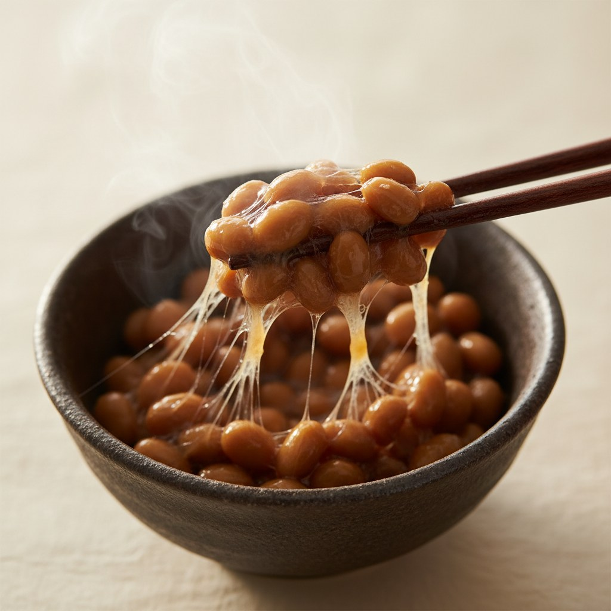
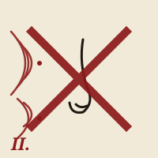
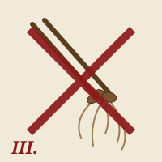
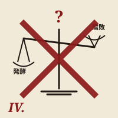
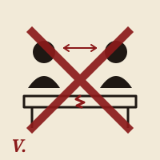

I.
視覚的暴力
茶色く粘る塊は、食欲という概念に対する露骨な反逆である。透明なパックを通じて、被害者は朝の心の準備なく直視を強いられる。
詳細を読むSever the strands. Silence the slime.
粘り、断つべし

Our Charter, in plain ink.
我々は1972年の京都密会以来、半世紀にわたり静かに、しかし執念深く、闘い続けている。納豆は栄養食品の仮面をかぶった粘性物質であり、食卓における中立を破壊する存在である。
本協議会は、加盟各国の主権を尊重しつつ、納豆に対する国際的合意形成・代替朝食の研究・被害者支援・若年層への啓発活動を行う。茨城県を敵視するものではないが、和解には条件がある。
我々は陽気な敵ではない。我々は粘る敵に、粘り強く抗う。
Five Counts Against the Defendant.

茶色く粘る塊は、食欲という概念に対する露骨な反逆である。透明なパックを通じて、被害者は朝の心の準備なく直視を強いられる。
詳細を読む
半径3メートル以内の鼻腔を制圧する。換気では追いつかない。これは食品の匂いではなく、領空侵犯である。
詳細を読む
一度箸についた糸は、食卓の物理法則を超越する。皿、口、頬、髪、机、リモコン — あらゆる物体が連鎖的に汚染される。
詳細を読む
「腐ってないけど発酵」という詭弁。発酵と腐敗の境界線を曖昧にする本食品は、食の倫理的座標系を根本から揺るがす。
詳細を読む
食卓を二分し、家族関係に静かな亀裂を生む。朝の食卓における賛成派と反対派の対立は、しばしば離婚理由欄の余白に滲む。本協議会は、この見えざる断層を可視化する。
詳細を読むThe Signatories of the Geneva–Kyoto Accord.
Recent Operations & Bulletins.
京都某所にて加盟5カ国・観察国代表計63名が参集。議題は「朝食の脱粘液化ロードマップ 2030」。3日間に及ぶ討議の末、卵かけご飯派と焼き魚派の歴史的和解が成立した。
Annual Summit全国の小中学校に向け、納豆を含まない朝食メニュー300案を無償提供。茨城県教育委員会からは丁重な辞退を受けたが、対話の窓口は維持されている。
Education朝食代替食品研究プロジェクト。被験者12名が3か月間、朝食を卵かけご飯のみで構成する実証研究を開始。途中経過は機関誌『非粘月報』にて公表予定。
Research関東圏で「納豆ピザ」を提供する飲食店が複数確認された旨、各国会員より報告あり。本協議会は、これを「文化的越境行為」と位置づけ、販売中止要請を含む段階的対応を検討中。
Bulletin №78一部報道にて報じられた、茨城県内での「糸」の増強研究につき、協議会は緊急監視体制を発動。納豆の持つ粘りが更なる進化を遂げ、国際社会の朝食風景に不可逆的な変容をもたらす可能性を深く憂慮しております。全ての加盟国に対し、厳重なる警戒を求めるものです。
Bulletin №79Apply for the Anti-Slime Order.